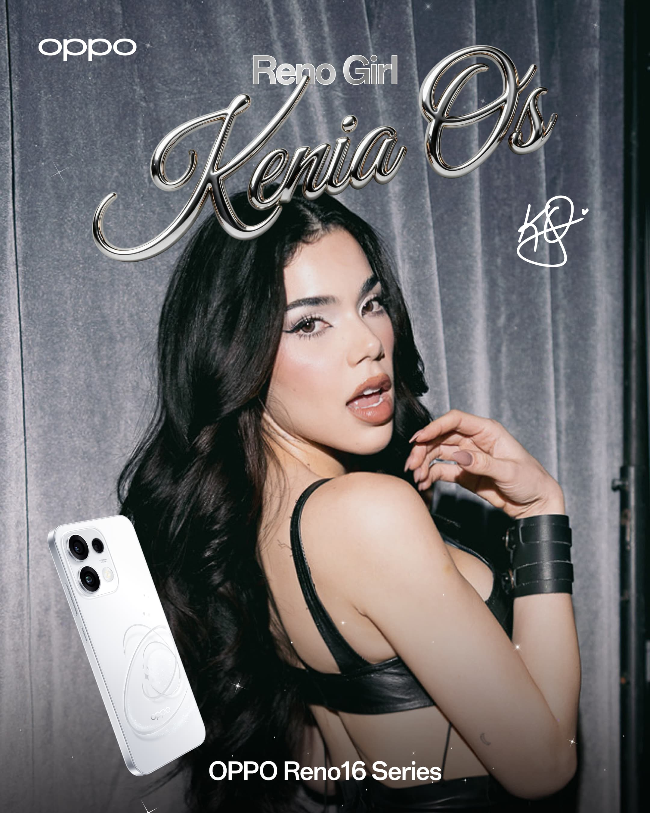
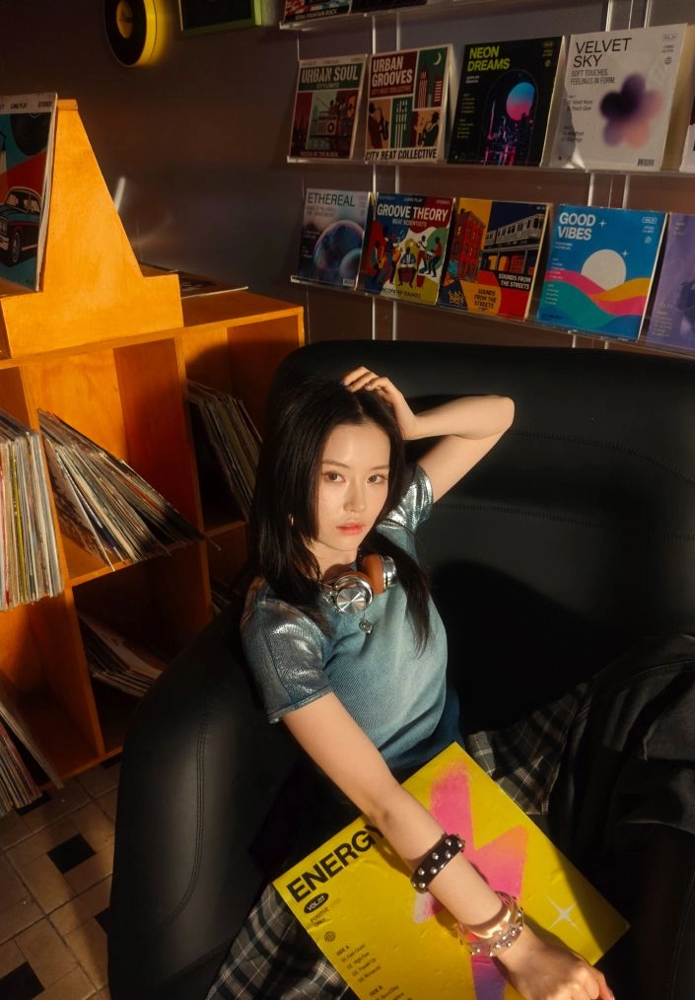

Cápsulas Interactivas Web
Toca cualquier cápsula para revisar su rúbrica de aprendizaje e iniciar la experiencia interactiva.
Neuroventas: Neurobiología de la Decisión de Compra
Domina cómo decide la mente del cliente, el lenguaje corporal en tienda y cómo activar dopamina para cerrar ventas.
Reno 16: La Cámara Más Fácil de Usar del Mercado
Aprende a demostrar el Teleobjetivo 3.5x Pro, la Selfie Gran Angular 100° y por qué Reno 16 es la mejor opción.

OPPO Reno 16: Real, Natural y Divertido
Explora Collage Remix AI, efecto Popout 3D y nitidez natural para enamorar a creadores de contenido en tienda.

OPPO Reno 16: Vibe Retro Pop Cam
Domina los modos Digicam, Instant Film y Fuga de Luz para crear postales con estética retro en un solo toque.
Videocápsulas de Entrenamiento Élite
Revisa la rúbrica de objetivos antes de cada video para dominar la técnica en piso de venta.

Aprende a leer a cualquier persona en 60s
Identifica en un minuto el perfil psicológico de tu cliente para adaptar tu discurso y cerrar más rápido.

La Venta Consultiva
Pasa de despachar equipos a diagnosticar necesidades reales mediante preguntas inteligentes de alto valor.

O+ Connect: Envío Directo con iPhone y Mac
Domina la transferencia instantánea de archivos entre OPPO y el ecosistema iOS para convencer a usuarios de iPhone.

ColorOS: Fluidez e Inteligencia Garantizada
Descubre por qué ColorOS ofrece hasta 6 años de fluidez certificada, cero anuncios y herramientas IA nativas.

Domina el Efecto WOW
Aprende técnicas infalibles para sorprender a tus clientes y cerrar más ventas en piso.

Capacitación OPPO Bubble
Descubre los secretos y casos de uso prácticos de la herramienta OPPO Bubble.